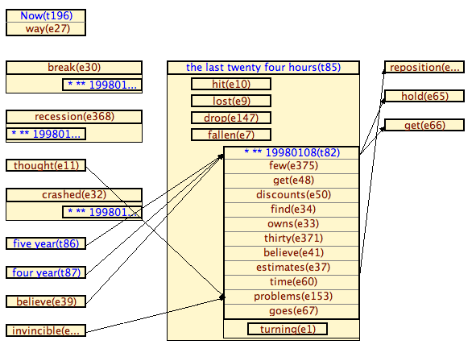

Download
Tarsqi Toolkit Download
All information below is outdated, please ignore. To get the toolkit go to https://github.com/tarsqi/ttk.
Version 1.0 of the TTK is available. To get a copy, please send an email to ttk@timeml.org, dropping us a few lines on who you are and what you want to use the toolkit for (we solicit this information purely out of curiosity; your email address will not be shared).
The code is written to be cross-platform, but is currently fully functional only for Linux and Mac OSX. Two external components need to be integrated differently on the Windows platform, causing disruptions to the processing pipeline. We are working on smoothing out the kinks on Windows and will post a new version of the toolkit asap.
Please have a sneak preview at the manual.
There is an unmoderated mailing list on all things TTK. We will periodically post messages when major changes have occurred. To sign up please go to subscribe.html

This work is licensed under a Creative
Commons Attribution-Noncommercial-Share Alike 3.0 United States
License.
Copyright ©2007 Brandeis University.